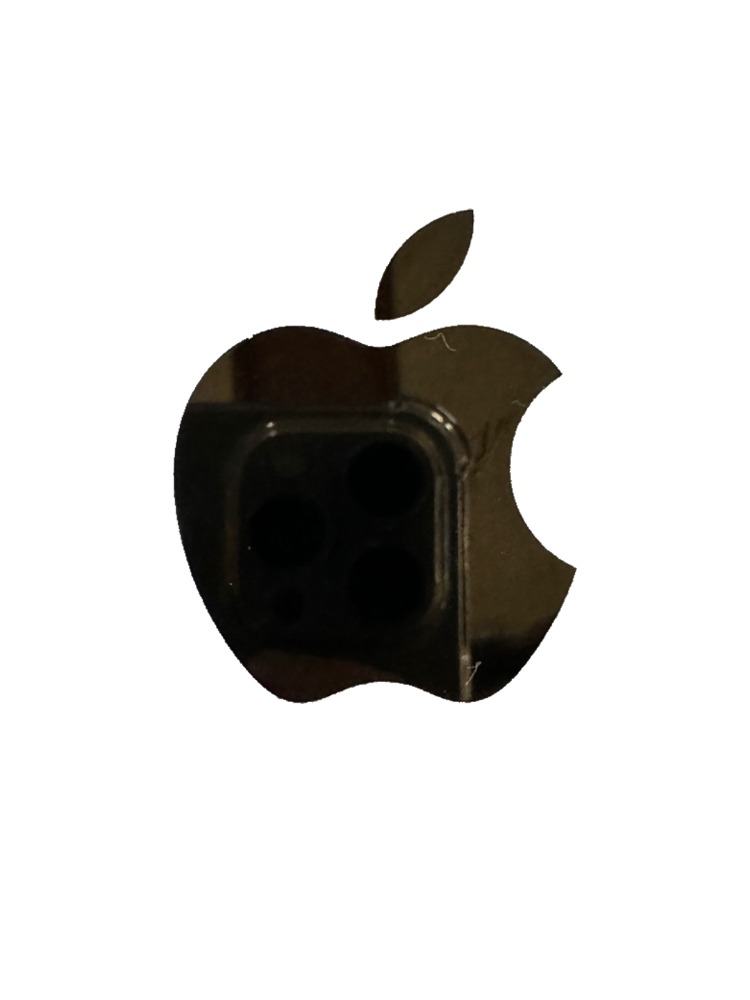
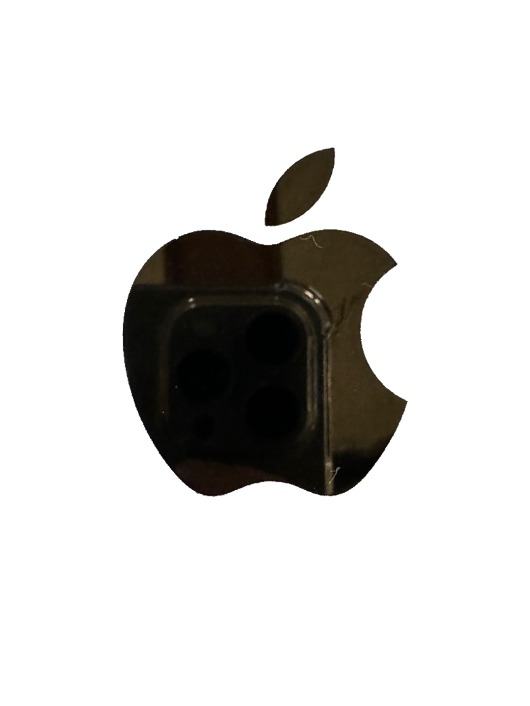
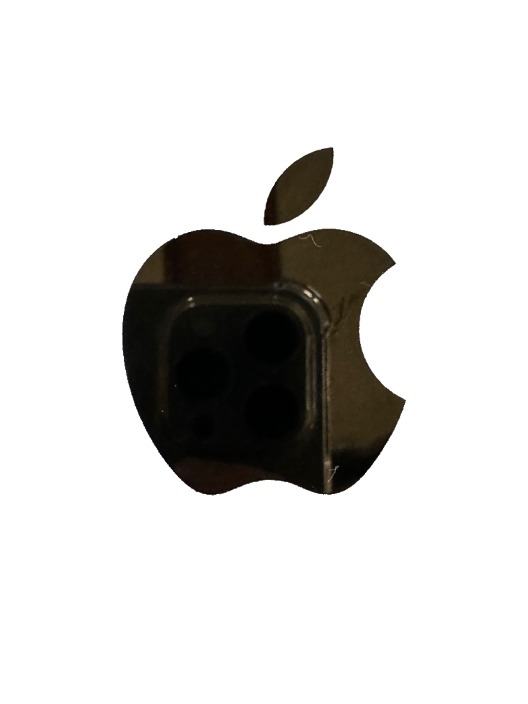

원  형태 사람들은 직선보다 곡선에 더 긍정적으로 반응한다. 직선은 단단하고 움직이지 않지만, 곡선은 부드럽고 유동적이다. 곡선을 보면 마음이 편안해진다. 이러한 이유로 곡선은 자유나 자연, 연약함, 예측 불가능을 표현한다. 다른 형태와 달리 원은 고유한 시작과 끝이 정해져 있지 않다. 이 때문에 원은 전체성, 완전성, 충만함 및 순환의 움직임을 상징한다. 또한, 원형은 커뮤니티, 우정, 포용성 및 힘을 나타내기도 한다. 원


 
